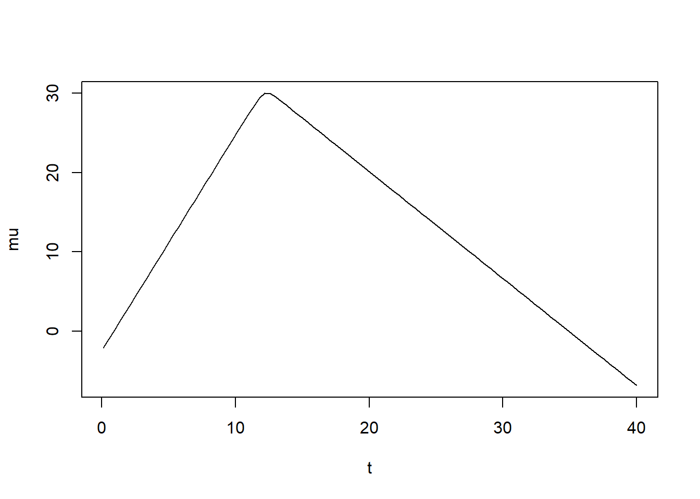
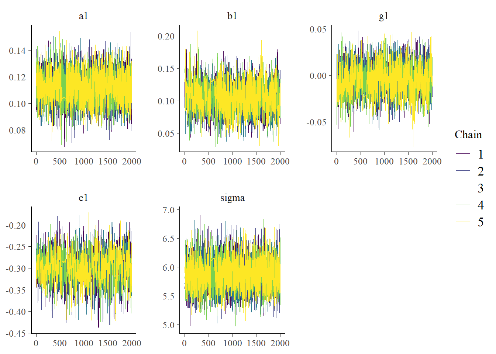
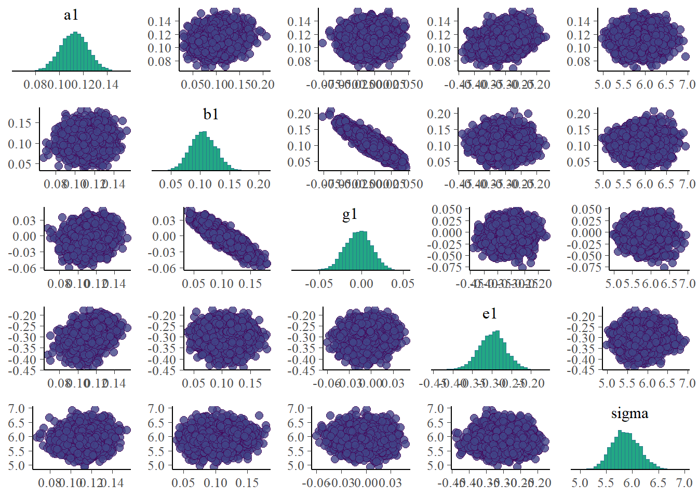
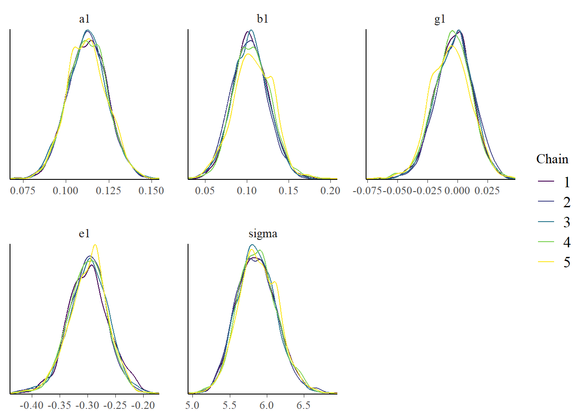
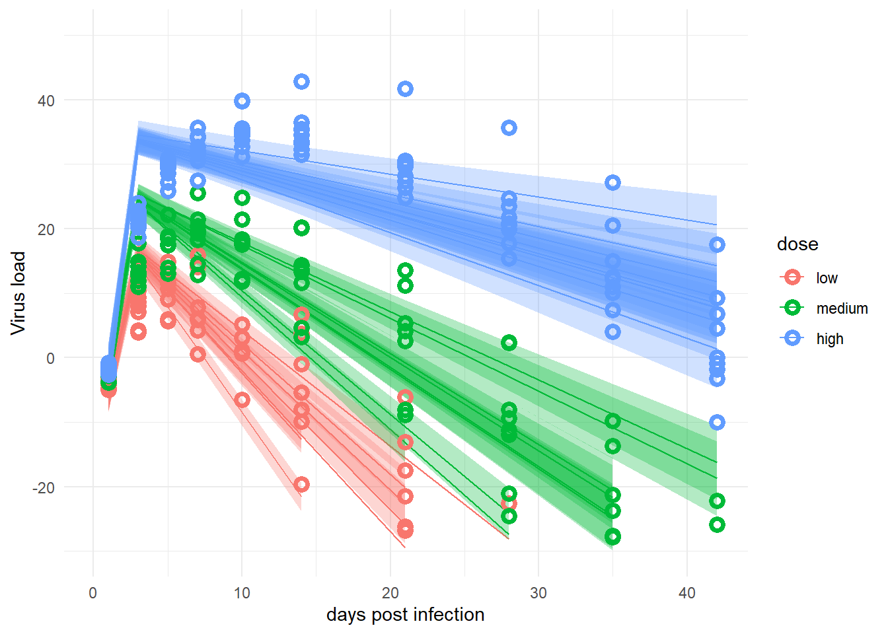
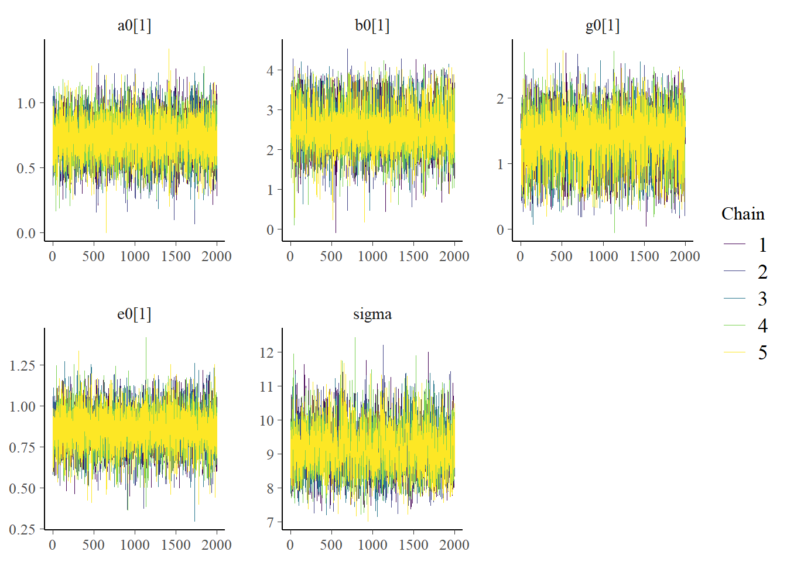
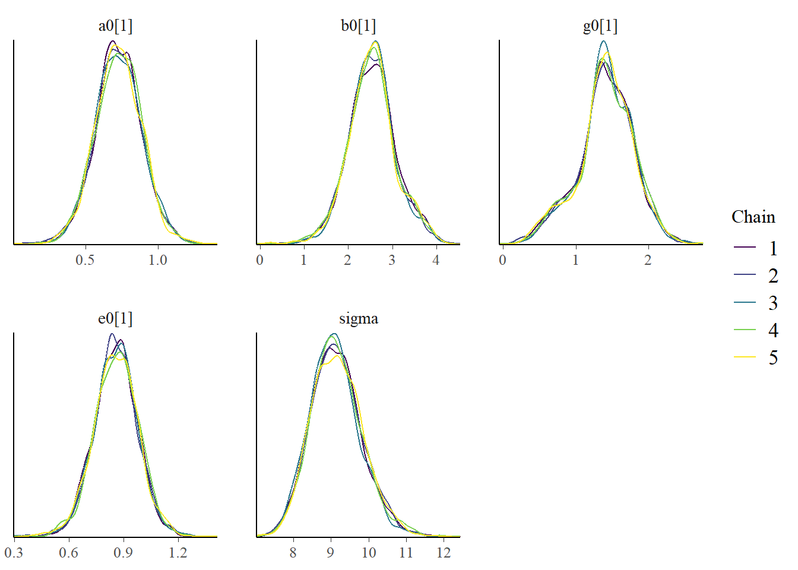
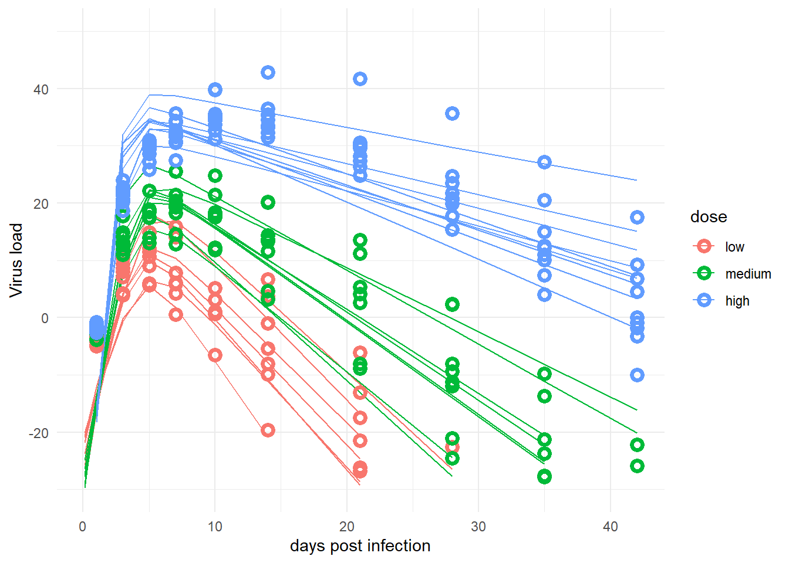

Bayesian analysis of longitudinal multilevel data - part 6
R
Data Analysis
Bayesian
Stan
Part 6 of a tutorial showing how to fit directly with Stan and cmdstanr.
Author
Andreas Handel
Published
February 16, 2024
Modified
March 9, 2025
Overview
This is an extension of a cmdstanr/Stan model to fit longitudinal data using Bayesian multilevel/hierarchical/mixed-effects models. It is a continuation of a prior series of posts. You should start at the beginning.
As described in the prior post I want to implement an ordinary differential equation (ODE) model with Stan. I am slowly building up to that.
While I had planned to hop from the 2-parameter cmdstanr and Stan model straight to the ODE model, I ended up deciding on one more intermediate step. Namely, I know that the ODE model I want to use has 4 main parameters, as opposed to the 2 parameters used here. I figured I might first build a more complex, 4-parameter non-ODE model before I try to implement the ODE model.
New deterministic model
The obvious candidate for that 4-parameter model is the equation I mentioned previously and that we ended up using in one of our papers. This equation was introduced as a good model to fit virus load data for an acute infection in this paper.
I’m deviating from the original paper by giving the parameters different names (\(\alpha\), \(\beta\), \(\gamma\), \(\eta\) instead of \(p\), \(g\), \(d\), \(k\)) to be consistent with what I’ve been doing so far.
Also, since the original model was developed and set up with the assumptions that all 4 main parameters are positive, I need to ensure that by using the previously described approach of exponentiating the parameters.
This leads to this equation for the virus load trajectory.
Here’s a bit of R code to explore this equation and to determine values for parameter priors that produce curves that are broadly consistent with our simulated data.
# brief plotting of model to get idea for priorst =seq(0.1,40,length=100) # all parameters are the log of their original valuesalph =30; # approximately the peak of virusbet =1.0; # approx. growth rategamm =2.5; # approx. peak timeet =0.3; # approx. decay ratenum =2*exp(alph)d1 =exp( -exp(bet)*(t -exp(gamm)) )d2 =exp( exp(et) * (t -exp(gamm)) )mu =log( num /(d1 + d2) ) plot(t,mu, type ="l") #looks somewhat like virus load in acute

Full model structure
The rest of the model follow the previous one, just with more parameters. They all get their own equations. Here are the main components of the the new model.
To fully specify the model, we need to give all parameters distributions. Here are the distributions for the population-level parameters. These do not vary between individuals. I’m choosing values for the prior distributions assuming that dose will lead to an increase in peak, time to peak and growth rate, and a reduction in decay rate. I’m only indicating the values with an X below since I keep changing them in the code and then they are out of sync here. Check the R script to see the chosen values.
In addition, we allow some parameters to differ between individuals, and we’ll implement hyper-parameters to allow these values to inform each other across individuals. This is again the adaptive pooling concept discussed previously.
I’m setting values for the prior distributions such that the virus load curve looks somewhat reasonable, based on the quick exploration of the model above. Again, not showing exact values here to not create confusion between what I write here and potentially different values I end up using in the code (and forgetting to update here). See the code for the actual values.
And that’s the full model. The basic structure is the same as before, but the model is bigger because I’m now modeling the virus trajectory (given by \(\mu_{i,t}\)) with 4 main parameters.
Model implementation
We’ll follow the same setup as in the previous post. Links to the Stan and R code files are given at the top of this document.
library('here') #for file loadinglibrary('dplyr') # for data manipulationlibrary('ggplot2') # for plottinglibrary('fs') #for file pathlibrary('cmdstanr') #for model fittinglibrary('bayesplot') #for plotting resultslibrary('posterior') #for post-processinglibrary('loo') #for model diagnostics
Some setup bits
############################################# some general definitions and setup stuff#############################################setting random number seed for reproducibilityrngseed =12345# I'll be saving results so we can use them without always running the model# Note that the files are often too large for standard Git/GitHub - where this project lives# Git Large File Storage should be able to handle it# I'm using a simple hack so I don't have to set up Git LFS# I am saving these large file to a folder that is synced with Dropbox# adjust accordingly for your setup#filepath = fs::path("C:","Data","Dropbox","datafiles","longitudinalbayes")filepath = fs::path("D:","Dropbox","datafiles","longitudinalbayes")filename ="cmdstanr4par.Rds"stanfile <-here('posts','2024-02-16-longitudinal-multilevel-bayes-6',"stancode-4par.stan")
Data
We’ll use the same data as before. I’m making one more change. Instead of hard-coding the values for the prior distributions into the Stan code, I’m passing them into the Stan code as part of the data. This makes exploring the Stan model more flexible, I don’t need to re-edit the Stan code if I want to try different values for the priors. I could do this for all parameters, but out of laziness, and because I don’t change them much, I’m hard-coding the sigma parameters inside the Stan file.
# adjust as necessarysimdatloc <- here::here('posts','2022-02-22-longitudinal-multilevel-bayes-1','simdat.Rds')simdat <-readRDS(simdatloc)Nind =length(unique(simdat$m3$id))Ntot =length(simdat$m3$id)# values for prior distributions# allows for exploring different values without having to edit Stan model codepriorvals =list(mu_a_mu =1, mu_a_sd =1,mu_b_mu =1, mu_b_sd =1,mu_g_mu =2.5, mu_g_sd =1,mu_e_mu =0.3, mu_e_sd =1,a1_mu =0.5, a1_sd =1,b1_mu =0.1, b1_sd =1,g1_mu =0.1, g1_sd =1,e1_mu =-0.1, e1_sd =1)# all data as one list, this is how Stan needs itfitdatbase=list(id=simdat[[3]]$id,outcome = simdat[[3]]$outcome,time = simdat[[3]]$time,dose_adj = simdat[[3]]$dose_adj[1:Nind], #first Nind valuesNtot = Ntot,Nind = Nind )fitdat =c(fitdatbase, priorvals)
Stan code
I again wrote the Stan code in a separate Stan file. Here is the code. The model is basically like the previous one, updated to reflect the model equations above. As mentioned above, instead of hard-coding values for prior distributions inside the Stan code, I’m passing some of them into the code as data. The advantage of passing them in is that I can more quickly play around with different values and see how results change. It also ensures that I use the same values in all parts of the model (e.g., model and generated quantities blocks).
//// Stan code for fitting a hierarchical model to time-series data//data{int<lower = 1> Ntot; //number of observationsint<lower = 1> Nind; //number of individualsvector[Ntot] outcome; //virus loadvector[Ntot] time; // times at which virus load is measuredvector[Nind] dose_adj; //dose after adjustment, 1 value per individualarray[Ntot] int id; //vector of person IDs to keep track which data points belong to whom//everything below are variables that contain values for prior distributionsreal mu_a_mu; real mu_b_mu;real mu_g_mu;real mu_e_mu;real mu_a_sd;real mu_b_sd;real mu_g_sd;real mu_e_sd;real a1_mu; real b1_mu;real g1_mu;real e1_mu;real a1_sd;real b1_sd;real g1_sd;real e1_sd;}parameters{// population variancereal<lower=0> sigma;// variance of priorsreal<lower=0> sigma_a;real<lower=0> sigma_b;real<lower=0> sigma_g;real<lower=0> sigma_e;// population-level dose dependence parametersreal a1;real b1;real g1;real e1;// hyper-parameters to implement adaptive poolingreal mu_a;real mu_b;real mu_g;real mu_e;// individual level variation parametersvector[Nind] a0;vector[Nind] b0;vector[Nind] g0;vector[Nind] e0;}// Generated/intermediate parameterstransformed parameters{// predicted virus load from modelvector[Ntot] virus_pred; // main model parameters// each individual has their potentially own value // I'm removing the last letter from each variable name// just to avoid potential conflicts with bulit-in names of Stan// such as beta for a beta distribution// it might not matter, but I wanted to be safevector[Nind] alph;vector[Nind] bet;vector[Nind] gamm;vector[Nind] et;// intermediate variables for denominators// just to make equation easier to understandreal d1; real d2; // compute main model parameters// multiply a by 30 to get better scalingfor ( i in1:Nind ) { alph[i] = exp( 30*( a0[i] + a1 * dose_adj[i]) ); bet[i] = exp( b0[i] + b1 * dose_adj[i] ); gamm[i] = exp( g0[i] + g1 * dose_adj[i] ); et[i] = exp( e0[i] + e1 * dose_adj[i] ); }// loop over all observations// since parameters are saved in vectors of length corresponding to number of individuals// we need to index with that extra id[i] notationfor (i in1:Ntot) { d1 = exp( -bet[id[i]] * (time[i] - gamm[id[i]]) ); d2 = exp( et[id[i]] * (time[i] - gamm[id[i]]) ); virus_pred[i] = log( 2*alph[id[i]] / ( d1 + d2) ); }} // end transformed parameters blockmodel{// hyper-priors to allow for adaptive pooling among individuals // values for the distributions are passed into the Stan code as part of the data mu_a ~ normal( mu_a_mu , mu_a_sd ); mu_b ~ normal( mu_b_mu , mu_b_sd ); mu_g ~ normal( mu_g_mu , mu_g_sd ); mu_e ~ normal( mu_e_mu , mu_e_sd );// variance of priors sigma_a ~ exponential(1); sigma_b ~ exponential(1); sigma_g ~ exponential(1); sigma_e ~ exponential(1);// individual variation of each ODE model parameter a0 ~ normal( mu_a , sigma_a ); b0 ~ normal( mu_b , sigma_b ); g0 ~ normal( mu_g , sigma_g ); e0 ~ normal( mu_e , sigma_e );// average dose-dependence of each ODE model parameter// values for the distributions are passed into the Stan code as part of the data a1 ~ normal( a1_mu , a1_sd); b1 ~ normal( b1_mu , b1_sd); g1 ~ normal( g1_mu , g1_sd); e1 ~ normal( e1_mu , e1_sd);// residual population variation sigma ~ exponential(1); // distribution of outcome (virus load)// all computations to get the time-series trajectory for the outcome are done // inside the transformed parameters block outcome ~ normal( virus_pred , sigma );}// for model diagnostics and explorationgenerated quantities {// define quantities that are computed in this block// for the individual level parameters, every individual// has the same prior so we only specify onereal mu_a_prior;real mu_b_prior;real mu_g_prior;real mu_e_prior;real<lower=0> sigma_a_prior;real<lower=0> sigma_b_prior;real<lower=0> sigma_g_prior;real<lower=0> sigma_e_prior;real a0_prior; real b0_prior; real g0_prior; real e0_prior; real a1_prior;real b1_prior;real g1_prior;real e1_prior;real<lower=0> sigma_prior;vector[Ntot] log_lik;vector[Ntot] ypred;// this is so one can plot priors and compare with posterior later // simulate the priors mu_a_prior = normal_rng( mu_a_mu , mu_a_sd); mu_b_prior = normal_rng( mu_b_mu , mu_b_sd); mu_g_prior = normal_rng( mu_g_mu , mu_g_sd); mu_e_prior = normal_rng( mu_e_mu , mu_e_sd); sigma_a_prior = exponential_rng( 1 ); sigma_b_prior = exponential_rng( 1 ); sigma_g_prior = exponential_rng( 1 ); sigma_e_prior = exponential_rng( 1 ); a0_prior = normal_rng(mu_a_prior, sigma_a_prior); b0_prior = normal_rng(mu_b_prior, sigma_b_prior); g0_prior = normal_rng(mu_g_prior, sigma_g_prior); e0_prior = normal_rng(mu_e_prior, sigma_e_prior); a1_prior = normal_rng( a1_mu , a1_sd); b1_prior = normal_rng( b1_mu , b1_sd); g1_prior = normal_rng( g1_mu , g1_sd); e1_prior = normal_rng( e1_mu , e1_sd); sigma_prior = exponential_rng( 1 );// compute log-likelihood and predictionsfor(i in1:Ntot) { log_lik[i] = normal_lpdf(outcome[i] | virus_pred[i], sigma); ypred[i] = normal_rng(virus_pred[i], sigma); }} //end generated quantities block
This loads and compiles the Stan model.
# make Stan model. stanmod1 <- cmdstanr::cmdstan_model(stanfile, pedantic=TRUE, force_recompile=TRUE)
Model fitting settings
These are the settings for the model fitting routine. Basically the same as before, only more initial conditions now because we have more parameters. And of course different values, since our model changed.
# separate definition of initial values, added to fs_m1 structure # a different sample will be drawn for each chain# there's probably a better way to do that than a for loopset.seed(rngseed) #make inits reproducibleinit_vals_1chain <-function() (list(mu_a =runif(1,1,1.5), mu_b =runif(1,0.8,1.2),mu_g =runif(1,2,3),mu_e =runif(1,0.2,0.6),sigma_a =runif(1,0,1),sigma_b =runif(1,0,1),sigma_g =runif(1,0,1),sigma_e =runif(1,0,1),a0 =runif(Nind,1,1.5),b0 =runif(Nind,0.8,1.5),g0 =runif(Nind,1.5,2.5),e0 =runif(Nind,0,1),a1 =runif(1,0.5,0.6),b1 =runif(1,0.1,0.1),g1 =runif(1,0.1,0.1),e1 =runif(1,-0.1,-0.1),sigma =runif(1,0,1)) )inits =NULLfor (n in1:fs_m1$chains){ inits[[n]] =init_vals_1chain()}fs_m1$init = inits
Model fitting
This runs the model. It’s not actually run here to speed up generation of this Quarto file, but the code chunk is in the R script, so you can run it.
To save time, we don’t run the model each time, instead we save the results and load them.
# loading previously saved fit.# useful if we don't want to re-fit# every time we want to explore the results.# since the file is too large for GitHub# it is stored in a local cloud-synced folder# adjust accordingly for your setupres_m1 <-readRDS(fs::path(filepath,filename))
Model diagnostics
First, we look at diagnostics from the fitting routine to make sure nothing obviously wrong shows up.
res_m1$cmdstan_diagnose()
Processing csv files: D:/Dropbox/datafiles/longitudinalbayes/stancode-4par-202402271819-1-39fd59.csvWarning: non-fatal error reading adaptation data
, D:/Dropbox/datafiles/longitudinalbayes/stancode-4par-202402271819-2-39fd59.csvWarning: non-fatal error reading adaptation data
, D:/Dropbox/datafiles/longitudinalbayes/stancode-4par-202402271819-3-39fd59.csvWarning: non-fatal error reading adaptation data
, D:/Dropbox/datafiles/longitudinalbayes/stancode-4par-202402271819-4-39fd59.csvWarning: non-fatal error reading adaptation data
, D:/Dropbox/datafiles/longitudinalbayes/stancode-4par-202402271819-5-39fd59.csvWarning: non-fatal error reading adaptation data
Checking sampler transitions treedepth.
Treedepth satisfactory for all transitions.
Checking sampler transitions for divergences.
210 of 17500 (1.20%) transitions ended with a divergence.
These divergent transitions indicate that HMC is not fully able to explore the posterior distribution.
Try increasing adapt delta closer to 1.
If this doesn't remove all divergences, try to reparameterize the model.
Checking E-BFMI - sampler transitions HMC potential energy.
The E-BFMI, 0.07, is below the nominal threshold of 0.30 which suggests that HMC may have trouble exploring the target distribution.
If possible, try to reparameterize the model.
Effective sample size satisfactory.
Split R-hat values satisfactory all parameters.
Processing complete.
Ok, so the sampler isn’t quite happy. We should sample more and more stringently, but that would take very long. So for the purpose of this investigation, and given that I’m only exploring this model as a stepping stone to the ODE model I’m really interested in, I’ll leave it the way it is. If this were an actual research project, I would obviously need to improve the model performance.
Another important check are to make a few diagnostic plots. We’ll first need to get the samples, both with and without warmups, to be able to make various figures.
#this uses the posterior package to get drawssamp_m1 <- res_m1$draws(inc_warmup =FALSE, format ="draws_df")allsamp_m1 <- res_m1$draws(inc_warmup =TRUE, format ="draws_df")
Now we can look at a few figures. Here I’m again showing a trace plot and a pairs plot.
# only main parameters, excluding parameters that we have for each individual, is too muchplotpars =c("a1","b1","g1","e1","sigma")bayesplot::color_scheme_set("viridis")bp1 <- bayesplot::mcmc_trace(samp_m1, pars = plotpars)bp2 <- bayesplot::mcmc_pairs(samp_m1, pars = plotpars)plot(bp1)

plot(bp2)

The plots look reasonable. Well-mixing chains and no noticeable correlations among parameters.
Model results
Let’s also look at the results, namely the posterior distributions of the parameters. We’ll again do both a table and a figure. We can’t really compare with the values we used to generate the model since we are using a different model to fit the data, so we shouldn’t expect any parameters to be similar. Thus, I’m not focusing further on the values. Again, for a real research project, you would want to carefully evaluate the parameters (after addressing the problems with the algorithm not working well).
bp3 <- bayesplot::mcmc_dens_overlay(samp_m1, pars = plotpars)plot(bp3)

Priors and Posteriors
Next, we’ll compare prior and posterior distributions. This can give an indication if the priors were selected well or are too broad or overly influential. To be able to show priors, we needed all that extra information in the generated quantities block in the Stan code.
# data manipulation to get in shape for plottingpostdf1 <- samp_m1 %>%select(!ends_with('prior')) %>%select(!starts_with(".")) %>%select(-"lp__") %>%select(!contains("[")) # awkward way of getting some further parameters# namely values from first individual for a0,b0,g0,e0postdf2 <- samp_m1 %>%select(contains("0[1]")) %>%rename_with(~gsub("[1]", "", .x, fixed =TRUE) )postdf <-cbind(postdf1, postdf2) priordf <- samp_m1 %>%select(ends_with('prior')) %>%rename_with(~gsub("_prior", "", .x, fixed =TRUE) ) postlong <- tidyr::pivot_longer(data = postdf, cols =everything() , names_to ="parname", values_to ="value") %>%mutate(type ="posterior")priorlong <- tidyr::pivot_longer(data = priordf, cols =everything() , names_to ="parname", values_to ="value") %>%mutate(type ="prior")ppdf <- dplyr::bind_rows(postlong,priorlong)
The plots show that the priors don’t overly influence the results, the data dominates the posteriors (they move and get more peaked, an indication that the data controls the posterior shape).
Observed versus predicted
Another useful plot is to look at observed versus predicted results. This is shown in the following plot.
# just to get a picture that can be shown together with the post#ggsave("featured.png",m1_p2)
The data (black line, \(y\) variable) and the model (thin green line, \(y_{rep}\)) are a bit off. That indicates that the model didn’t fully capture the patterns found in the data and might need modification.
Cross-validation tests
Here’s again some further exploration via cross-validation with the loo package.
The marginal posterior predictive plot suggests some improvement might be possible (so that the solid line is more on top of the green lines). See here for more.
Model predictions
Finally, we again want to look at the actual data and the model predictions. It’s exactly the same code as for the 2-parameter model.
# averages and CI for # estimates of deterministic model trajectory# for each observation# this is computed in the transformed parameters block of the Stan codemu <- samp_m1 |>select(starts_with("virus_pred")) |>apply(2, quantile, c(0.05, 0.5, 0.95)) |>t() rownames(mu) <-NULL# estimate and CI for prediction intervals# the predictions factor in additional uncertainty around the mean (mu)# as indicated by sigma# this is computed in the predicted-quantities block of the Stan code# the average of mu and preds should be more or less the same# but preds will have wider uncertainty due to the residual variation sigmapreds <- samp_m1 |>select(starts_with("ypred")) |>apply(2, quantile, c(0.05, 0.5, 0.95)) |>t() rownames(preds) <-NULL
# change dose so it looks nicer in plotdose =as.factor(fitdat$dose_adj)levels(dose)[1] <-"low"levels(dose)[2] <-"medium"levels(dose)[3] <-"high"#place everything into a data framefitpred =data.frame(id =as.factor(fitdat$id),dose = dose,time = fitdat$time,Outcome = fitdat$outcome,Estimate = mu[,2],Qmulo = mu[,1], Qmuhi = mu[,3],Qsimlo = preds[,1], Qsimhi = preds[,3])#make the plot#not including the prediction intervals since it looks too messypredplot <-ggplot(data = fitpred, aes(x = time, y = Estimate, group = id, color = dose ) ) +geom_line() +geom_ribbon(aes(x=time, ymin=Qmulo, ymax=Qmuhi, fill = dose, color =NULL), alpha=0.3, show.legend = F) +#geom_ribbon(aes(x=time, ymin=Qsimlo, ymax=Qsimhi, fill = dose, color = NULL), alpha=0.1, show.legend = F) +geom_point(aes(x = time, y = Outcome, group = id, color = dose), shape =1, size =2, stroke =2) +scale_y_continuous(limits =c(-30,50)) +labs(y ="Virus load",x ="days post infection") +theme_minimal() plot(predplot)

The model fits don’t look that great. I’m not sure why the model isn’t capturing the data better, if it needs more iterations and/or better choice of priors, or if there’s something inherent about the structure of this model not being able to capture the data generated by the 2-parameter model, even though it is more flexible with its 4 parameters. I suspect it’s the last one, it seems even though this new model has more parameters, and thus should be more flexible, it can’t quite capture the more gentle increase and decrease of the data generated by the simpler model.
In a reasearch/real-world setting, I would try to explore the model, priors, algorithm to make sure 1) I don’t have any remaining mistakes in my code️ 🙄, 2) The problem is not due to poor choice of priors or starting values, 3) the hierarchical structure is not constraining the model too much. If those are ruled out, change the model to something that is better able to capture the patterns seen in the data.
In fact, I did a bit of that and figured I’ll show it too.
Alternative model
Since the previous model isn’t fitting too well, I wanted to understand a bit more why that might be. I decided to implement a simpler model. It’s the same 4-parameter equation for the virus load as above, but with a simpler parameter structure. I only used individual-level parameters which are independent of each other, and there’s no dependence on dose. The complete independence of each parameter from each other is expected to make the model too flexible and overfit. The dose dependence is the scientific question, so removing them makes the model scientifically pointless. But I wanted to see if a model that basically allows each individual to have their completely independent set of main model parameters could get me something that matches the data closer. In some sense, this is the most flexible model I can make. If that doesn’t work, it suggests the underlying model for the virus load is not able to capture the pattern seen here.
This is the updated model. I would of course not need both the \(\alpha, \beta, ...\) and \(a_0, b_0,...\) parameters since they are the same here and just duplicates. I decided to keep it anyway so it’s easier to compare to the above model - and I had to make fewer changes to the code 😁.
Here’s the code to set up and run this model. We of course have a new Stan model and need to pick new priors and new initial conditions.
############################# Try an alternative model############################filepath = fs::path("D:","Dropbox","datafiles","longitudinalbayes")filename_simple ="cmdstanr4par-simple.Rds"stanfile <-here('posts','2024-02-16-longitudinal-multilevel-bayes-6',"stancode-4par-simple.stan")rngseed =12345
# need to update priorspriorvals2 =list(a0_mu =1, a0_sd =1,b0_mu =1, b0_sd =1,g0_mu =2.5, g0_sd =1,e0_mu =0.3, e0_sd =1 )fitdat2 =c(fitdatbase,priorvals2)
//// Stan code for fitting a hierarchical model to time-series data//data{int<lower = 1> Ntot; //number of observationsint<lower = 1> Nind; //number of individualsvector[Ntot] outcome; //virus loadvector[Ntot] time; // times at which virus load is measuredvector[Nind] dose_adj; //dose after adjustment, 1 value per individualarray[Ntot] int id; //vector of person IDs to keep track which data points belong to whom//everything below are variables that contain values for prior distributionsreal a0_mu; real b0_mu;real g0_mu;real e0_mu;real a0_sd;real b0_sd;real g0_sd;real e0_sd;}parameters{// population variancereal<lower=0> sigma;// individual-level parametersvector[Nind] a0;vector[Nind] b0;vector[Nind] g0;vector[Nind] e0;}// Generated/intermediate parameterstransformed parameters{// predicted virus load from modelvector[Ntot] virus_pred; // main model parameters// each individual has their potentially own value // I'm removing the last letter from each variable name// just to avoid potential conflicts with bulit-in names of Stan// such as beta for a beta distribution// it might not matter, but I wanted to be safevector[Nind] alph;vector[Nind] bet;vector[Nind] gamm;vector[Nind] et;// intermediate variables for denominators// just to make equation easier to understandreal d1; real d2; // compute main model parametersfor ( i in1:Nind ) { alph[i] = exp(30*a0[i]); bet[i] = exp(b0[i]); gamm[i] = exp(g0[i]); et[i] = exp(e0[i]); }// loop over all observations// since parameters are saved in vectors of length corresponding to number of individuals// we need to index with that extra id[i] notationfor (i in1:Ntot) { d1 = exp( -bet[id[i]] * (time[i] - gamm[id[i]]) ); d2 = exp( et[id[i]] * (time[i] - gamm[id[i]]) ); virus_pred[i] = log( 2*alph[id[i]] / ( d1 + d2) ); }} // end transformed parameters blockmodel{// individual variation of each ODE model parameter a0 ~ normal( a0_mu , a0_sd ); b0 ~ normal( b0_mu , b0_sd ); g0 ~ normal( g0_mu , g0_sd ); e0 ~ normal( e0_mu , e0_sd );// residual population variation sigma ~ cauchy(0, 1); // distribution of outcome (virus load)// all computations to get the time-series trajectory for the outcome are done // inside the transformed parameters block outcome ~ normal( virus_pred , sigma );}// for model diagnostics and explorationgenerated quantities {// define quantities that are computed in this blockvector[Ntot] ypred;vector[Ntot] log_lik;//real<lower=0> sigma_prior;real sigma_prior;real a0_prior;real b0_prior;real g0_prior;real e0_prior;// this is so one can plot priors and compare with posterior later // simulate the priors sigma_prior = abs(cauchy_rng(0, 1)); a0_prior = normal_rng( a0_mu , a0_sd); b0_prior = normal_rng( b0_mu , b0_sd); g0_prior = normal_rng( g0_mu , g0_sd); e0_prior = normal_rng( e0_mu , e0_sd);// compute log-likelihood and predictionsfor(i in1:Ntot) { log_lik[i] = normal_lpdf(outcome[i] | virus_pred[i], sigma); ypred[i] = normal_rng(virus_pred[i], sigma); }} //end generated quantities block
Compiling the Stan model.
# make Stan model. stanmod2 <- cmdstanr::cmdstan_model(stanfile, pedantic=TRUE, force_recompile=TRUE)
Model run
This runs the model and saves results.
# most of it the same as previouslyres_m2 <- stanmod2$sample(data = fitdat2,chains = fs_m1$chains,init = fs_m1$init,seed = rngseed,parallel_chains = fs_m1$chains,iter_warmup = fs_m1$warmup,iter_sampling = fs_m1$sampling,save_warmup = fs_m1$save_warmup,max_treedepth = fs_m1$max_td,adapt_delta = fs_m1$adapt_delta,output_dir = filepath)
#this uses the posterior package to get drawssamp_m2 <- res_m2$draws(inc_warmup =FALSE, format ="draws_df")allsamp_m2 <- res_m2$draws(inc_warmup =TRUE, format ="draws_df")
Diagnostics. Still not quite right.
res_m2$cmdstan_diagnose()
Processing csv files: D:/Dropbox/datafiles/longitudinalbayes/stancode-4par-simple-202402271836-1-5ba055.csvWarning: non-fatal error reading adaptation data
, D:/Dropbox/datafiles/longitudinalbayes/stancode-4par-simple-202402271836-2-5ba055.csvWarning: non-fatal error reading adaptation data
, D:/Dropbox/datafiles/longitudinalbayes/stancode-4par-simple-202402271836-3-5ba055.csvWarning: non-fatal error reading adaptation data
, D:/Dropbox/datafiles/longitudinalbayes/stancode-4par-simple-202402271836-4-5ba055.csvWarning: non-fatal error reading adaptation data
, D:/Dropbox/datafiles/longitudinalbayes/stancode-4par-simple-202402271836-5-5ba055.csvWarning: non-fatal error reading adaptation data
Checking sampler transitions treedepth.
Treedepth satisfactory for all transitions.
Checking sampler transitions for divergences.
No divergent transitions found.
Checking E-BFMI - sampler transitions HMC potential energy.
E-BFMI satisfactory.
Effective sample size satisfactory.
Split R-hat values satisfactory all parameters.
Processing complete, no problems detected.
A few plots. They look fairly reasonable.
# only a few parametersplotpars =c("a0[1]","b0[1]","g0[1]","e0[1]","sigma")bayesplot::color_scheme_set("viridis")bp1 <- bayesplot::mcmc_trace(samp_m2, pars = plotpars)bp3 <- bayesplot::mcmc_dens_overlay(samp_m2, pars = plotpars)plot(bp1)

plot(bp3)

Comparing priors and posteriors.
# data manipulation to get in shape for plotting# start with manipulation of posterior parameterspostdf1 <- samp_m2 %>%select(!ends_with('prior')) %>%select(contains("sigma")) # akward way of getting some further parameters# namely values from first individual for a0,b0,g0,e0postdf2 <- samp_m2 %>%select(contains("0[1]")) %>%rename_with(~gsub("[1]", "", .x, fixed =TRUE) )postdf <-cbind(postdf1, postdf2) postlong <- tidyr::pivot_longer(data = postdf, cols =everything() , names_to ="parname", values_to ="value") %>% dplyr::mutate(type ="posterior")# manipulation of prior parameterspriordf <- samp_m2 %>%select(ends_with('prior')) %>%rename_with(~gsub("_prior", "", .x, fixed =TRUE) ) priorlong <- tidyr::pivot_longer(data = priordf, cols =everything() , names_to ="parname", values_to ="value") %>% dplyr::mutate(type ="prior")ppdf <- dplyr::bind_rows(postlong,priorlong)
# change dose so it looks nicer in plotdose =as.factor(fitdat2$dose_adj)levels(dose)[1] <-"low"levels(dose)[2] <-"medium"levels(dose)[3] <-"high"fitpred2 =data.frame(id =as.factor(fitdat2$id),dose = dose,time = fitdat2$time,Outcome = fitdat2$outcome,Estimate = mu2[,2],Qmulo = mu2[,1], Qmuhi = mu2[,3],Qsimlo = preds2[,1], Qsimhi = preds2[,3])#make the plot#not including the CI or prediction intervals since it looks too messypredplot2 <-ggplot(data = fitpred2, aes(x = time, y = Estimate, group = id, color = dose ) ) +geom_line() +#geom_ribbon(aes(x=time, ymin=Qmulo, ymax=Qmuhi, fill = dose, color = NULL), alpha=0.3, show.legend = F) +#geom_ribbon(aes(x=time, ymin=Qsimlo, ymax=Qsimhi, fill = dose, color = NULL), alpha=0.1, show.legend = F) +geom_point(aes(x = time, y = Outcome, group = id, color = dose), shape =1, size =2, stroke =2) +scale_y_continuous(limits =c(-30,50)) +labs(y ="Virus load",x ="days post infection") +theme_minimal() plot(predplot2)

This doesn’t really look any better compared to the other model. So I – preliminarily – conclude that the main 4-parameter deterministic model I use here to describe the virus load trajectories just can’t capture the shape of the data generated by the simpler 2-parameter model.
Summary and continuation
This completes the 4-parameter model. I would not use this model if I really wanted to fit the data here. But I just wanted to get a working model, I’m not really interested in the model results. I just wanted to set the stage for the next version, which is the 4-parameter ODE model. So it’s finally time to tackle that one.